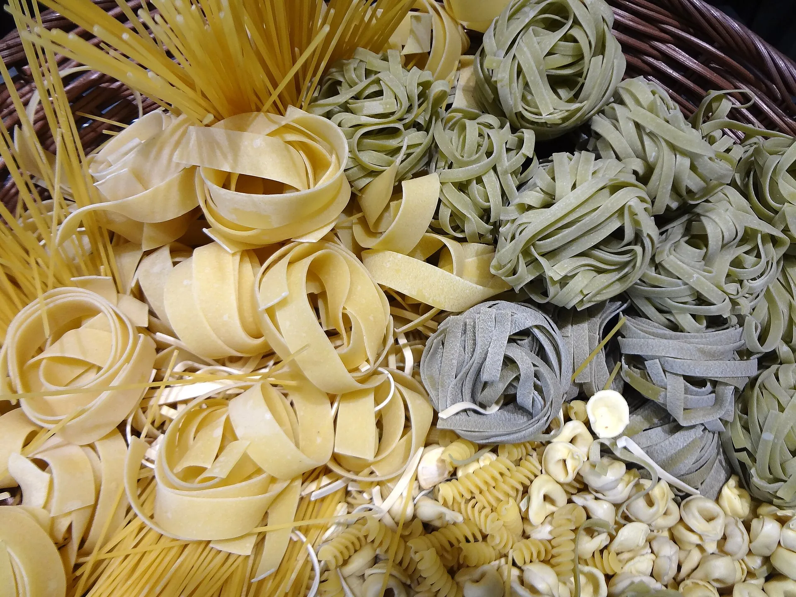
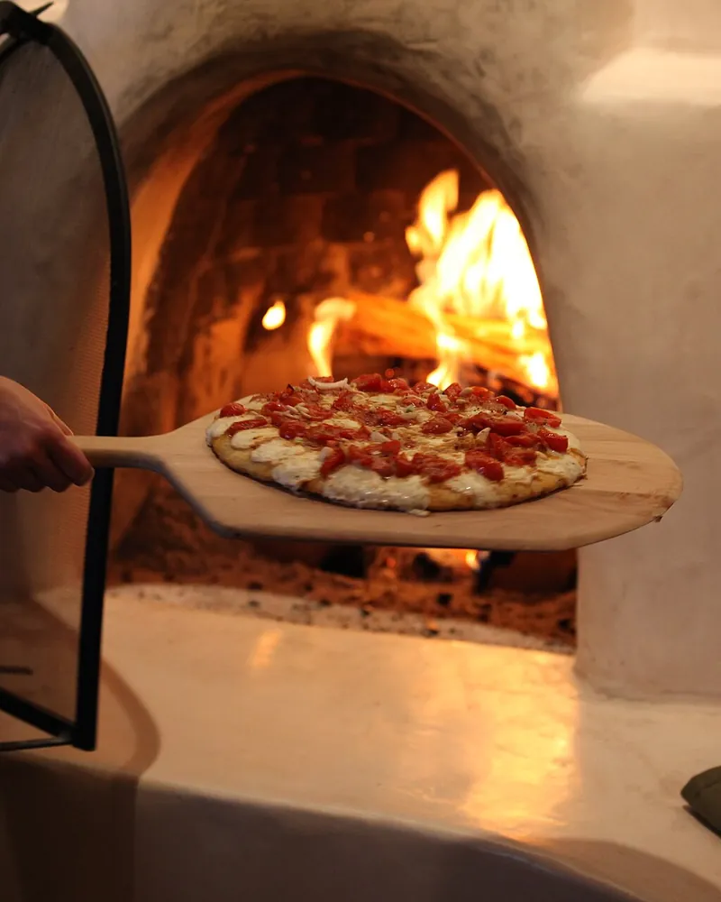
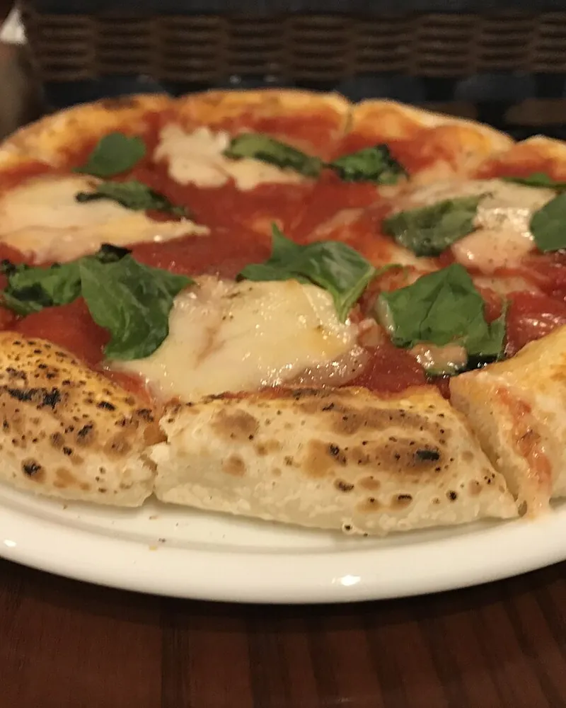

The Best Restaurant in Town
Wine Spectator Restaurant Awardnivel și an la confirmare
Vă așteptăm cu drag și vă servim cu plăcere!
Bucătăria. Descoperă meniul, fel cu fel.
Opt capitole din meniu, de la antipasti la deserturi. Alege unul și îl deschizi direct în meniul digital.
 Exemplu · de înlocuit
Exemplu · de înlocuitPasta e Risotto
Inima trattoriei

Exemplu · de înlocuitPizza
Clasice și rețete ale casei

Exemplu · de înlocuitRecomandări din partea casei
Alese de bucătar